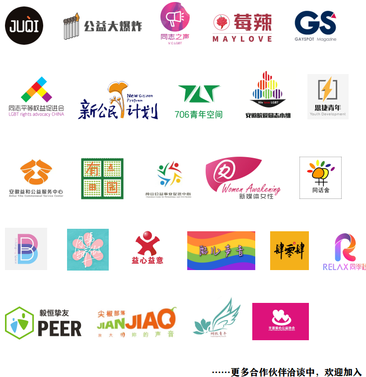
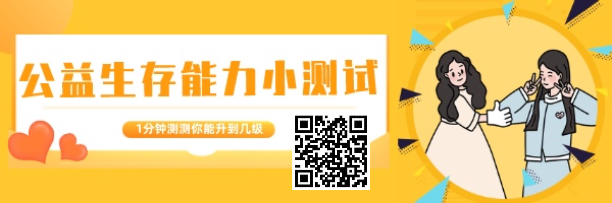

助力公益行业性别友善，我们还能做什么？
编者荐语：
北同文化的部分小伙伴联合来自公益界不同机构的伙伴组成了“性别友善公益人小组”，进行了认真的研究与设计，撰写出了这份面向中国公益行业的防治性骚扰工具包。和瓜瓜一起来看看吧！
以下文章来源于北同文化 ，作者尊重多元合作
北京同志中心官方微信。北京同志中心成立于2008年2月14日，作为一家民间公益组织，通过在北京地区提供社区服务和开展倡导活动来增强中国同志（LGBT）人群的自我认同；推动同志运动，消除歧视，实现平等；并促进多元文化和公民社会的发展。

基于公益行业特有的复杂性，北同文化的部分小伙伴联合来自公益界不同机构的伙伴组成了“性别友善公益人小组”，共同进行了认真的研究与设计，撰写出了一份面向中国公益行业的防治性骚扰工具包。
通过编制、发布及推广这份工具包，我们希望能够向中国本土公益行业的机构及伙伴们科普性骚扰的定义、分类与相关案例，帮助大家正确识别性骚扰行为，在完善的机制下更加愉快、轻松地为公益事业工作，让中国的公益行业在规范化、伦理化的道路上走得更深、更远。
2018年夏，公益界连续曝光出多起性骚扰丑闻。不少媒体报道以“地震”来比喻这些丑闻给公益行业带来的巨大影响。
公益事业具有涵养良知良能、凝聚善念善行的作用，所以公众对其从业者的道德期待也相对较高。所以，丑闻在社交媒体上被曝光后，“没想到公益圈这么乱”、“公益行业不可信”等评论一时纷纷涌现。这些不仅对公益行业的公信力造成了伤害，也在有志于参加公益事业的伙伴心中蒙上了阴翳。
丑闻发生后，一些公益行业的从业者共同推动了一些公共讨论和机制建设行动。但是，2019年后，相关议题的行业性公共讨论没有再次发生，遑论深入，而在对一些相关指控的小范围讨论中人们却明显可以感觉到性侵、性骚扰的姑息氛围仍然浓重。
2020年，相关事件仍在发酵，我国首例以“性骚扰损害责任纠纷”为独立案由的案件胜诉，关于公益慈善机构防治性骚扰机制建设与落地的问题再成焦点。
2020年5月颁布的《民法典》在第1010条明确了“机关、企业、学校等单位应当采取合理的预防、受理投诉、调查处置等措施”，正式将防治性骚扰规定为了机构的法定义务。为了正视、处理那场“公益行业大地震”中所暴露出来的问题，重新唤起公众对公益行业的信任，建立防治性骚扰制度，端正业内的性别平等导向已成为了公益机构们迫在眉睫的任务。
然而，公益行业乃至职场内的性骚扰事件具有相当程度的复杂性。
01
公益机构职场性骚扰定义模糊，识别困难
由于缺乏性教育知识，没有接受过相关培训，甚至许多当事人都难以识别自己的遭遇究竟是不是性骚扰。很多冒犯被裹上了“玩笑”的美名，不能做到一笑置之的人会被扣上“小题大做”、“开不起玩笑”的帽子，并遭受明里暗里的排挤。
每一位公益行业的伙伴在初入业内时都多少怀抱着一颗赤诚之心，想要通过贡献自己的力量让这个社会变得更好，也因此对业内的前辈、伙伴们带有着天然的敬仰与信任。正是这种同理心与连结感让业内伙伴们凝聚在一起，却也成为了一种可以被滥用的情感上的优势。
02
程序正义的缺失致使当事人无处发声
一位当事人曾提到，在她发朋友圈曝光自己的经历之前，也曾考虑通过公益组织理事会内部举报的方式来揭发性骚扰者。但是她所在的机构内部尚无完善的相关机制，缺乏处理性骚扰事件的程序正义。
理事会有意愿处理这方面的事件吗？TA们会怎么处理？TA们会相信一个普通女孩对一个风光无两的知名人物的举报吗？自己的举报会不会反过来进一步伤害自己？出于这些顾虑，她最终放弃了内部渠道，选择了在朋友圈公开这一切。
03
结构权力不平等致使当事人难以伸张正义，甚至拒绝发声
在曾经一起行业内性骚扰事件中，当事人在事件发生后向直属上级反映了自己的遭遇，不料却遭到想着大事化了的上级的阻拦与劝诫。好在事件发酵后高层听闻了此事，与当事人进行了面对面的沟通，提供了心理支持，并处分了不作为的直属上级，才得以避免更严重的后果。
正如这个案例所反映出的现实，职场内部的人际与权力关系错综复杂，当事人在性骚扰事件中会面临各种各样的胁迫与困扰。实施性骚扰的行为人往往处于权力结构的上层，这让他们不仅可以利用人际关系切断投诉渠道，致使当事人求助无门，更会以明示或暗示的方式威胁当事人，如若拒绝或告发就会有降职、降薪甚至被辞退的风险。
04
公益行业中的人员组成、机构规模更加多样
与其它行业不同的是，在公益行业中，志愿者群体是不容忽视的重要部分。TA们的工作岗位、工作时间及人员变动都极其灵活，并不受机构的正式管理，更难以在遇到性骚扰事件时进行维权。此外，捐赠人等合作伙伴、服务对象等群体也是公益机构的重要部分，但由于其在机构中身份定位的模糊不清，一旦发生性骚扰事件则难以得到合理的处理结果。
此外，大多公益机构与企业公司、政府机关、国际组织等其他机构架构不同，在人力资源、时间和资金上有限，尤其是工作人员较少的草根机构更难建立起完善的防治性骚扰机制。
基于如上这些公益行业特有的复杂性，北同文化的部分小伙伴联合来自公益界不同机构的伙伴组成了“性别友善公益人小组”，共同进行了认真的研究与设计，撰写出了这份面向中国公益行业的防治性骚扰工具包。
这份工具包充分考虑到了各种性别和性倾向人士都有可能遭遇性骚扰，并提供了从机构到个体的预防性骚扰的实操措施，收集整理了各领域专家和援助机构联络方式等丰富资源。
此外，工具包也考虑到了公益行业的特殊情况，为不同规模与组成的机构提供了相应的方案，并模拟不同情景进行了讨论，内容简洁明了且不乏趣味性，是一个拿来即能用的“懒人工具包”
工具包目录 左右滑动查看更多
接下来，伴随着这份工具包的传播，性别友善公益人小组也将会为有需要的机构提供有助于防治性骚扰、建立平等尊重氛围的配套培训。
通过编制、发布及推广这份工具包，我们希望能够向中国本土公益行业的机构及伙伴们科普性骚扰的定义、分类与相关案例，帮助大家正确识别性骚扰行为，在完善的机制下更加愉快、轻松地为公益事业工作，让中国的公益行业在规范化、伦理化的道路上走得更深、更远。也感谢女同交友小程序橘气团队协作开发，提供技术支持（仅限女同性恋加入，邀请码：北同文化）。
Q1
为什么要突显公益行业？给人一种公益行业性骚扰很严重的感觉，难道不是在抹黑公益行业吗？
公益行业是社会的一个缩影，公益从业者也是社会人，社会上诱发性骚扰的种种意识、机制与现实等因素在公益慈善界同样存在。例如“江湖习气”“‘大佬’文化”“山头文化”“男权意识”“酒桌文化”“权威崇拜”“个人膨胀”“组织内部权力监督与制约不足”，等等。
但是，这些因素往往被公益慈善的道德光环所遮蔽，以至于未能及时或普遍地引起应有重视和防微杜渐。我们并非意指在公益行业性骚扰问题尤为凸显，而是期待公益行业从业者提升在防治性骚扰议题上的意识，在该议题上成为各行业从业者的榜样。
Q2
读了这个工具包我们就会建立防治性骚扰机制了吗，有问题找谁？
这份工具包为不同规模与组成的机构提供了相应的方案，将会手把手指导机制的落地。性别友善公益人小组也会为有需要的伙伴提供配套的培训，解答疑问。你也可以把问题发送至我们的邮箱anti_harassment@163.com，我们将提供解答。
Q3
这个性别友善公益人小组是一个机构吗？为什么不公开名字？
我们不是一个机构，是一个非正式小组，参与者都是性别友善的公益人。我们也希望未来有更多人可以加入，共同为中国公益行业性骚扰防治的规范化与性别环境的改善贡献力量。
联合传播伙伴

扫描下图获取工具包

也欢迎扫描下图玩小游戏，
测试自己在公益组织的生存能力～

参考资料
[1]《慈善蓝皮书：中国慈善发展报告（2020）》
作者：性别友善公益人小组
排版：gby 小周